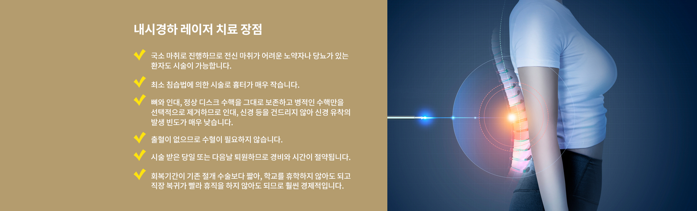
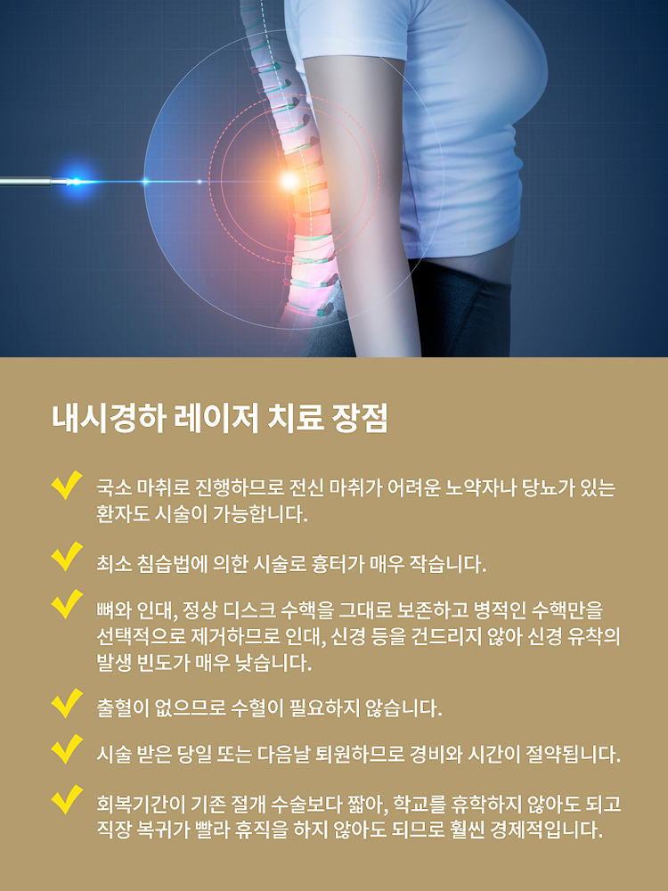
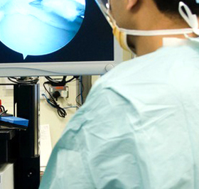

주메뉴
병원소개
의료진소개
진료안내
진료시간/오시는길
병원시설안내
재활/교정 클리닉 치료
도수 치료
슬링운동 치료
소도구운동 치료
체외충격파 치료
고강도 레이저 치료
비수술 치료
내시경하 레이저 치료
초음파 유도하 치료
C-arm 유도하 치료
커뮤니티
주메뉴
병원소개
의료진소개
진료안내
진료시간/오시는길
병원시설안내
재활/교정 클리닉 치료
도수 치료
슬링운동 치료
소도구운동 치료
체외충격파 치료
고강도 레이저 치료
비수술 치료
내시경하 레이저 치료
초음파 유도하 치료
C-arm 유도하 치료
커뮤니티
비수술 치료
최첨단 의료장비로 정확한 진단하에
개개인 맟춤 치료를 시행합니다.
내시경하 레이저 치료
초음파 유도하 치료
C-arm
내시경하 레이저 치료
SUSUNG DANDI NEUROSURGERY
허리디스크 및 협착증 초기의 환자들에게 이쑤시개 굵기(1.5mm)의 가는 관을 삽입한 후
그안으로 특수 제작된 내시경을 넣어 직접 병변 부위를 보면서 레이저를 이용하는 치료법입니다.
 
관련시술
내시경 레이저
디스크 절제술
꼬리뼈 경막 외
내시경 치료술

추간공 경막 외
내시경 치료술
그 외